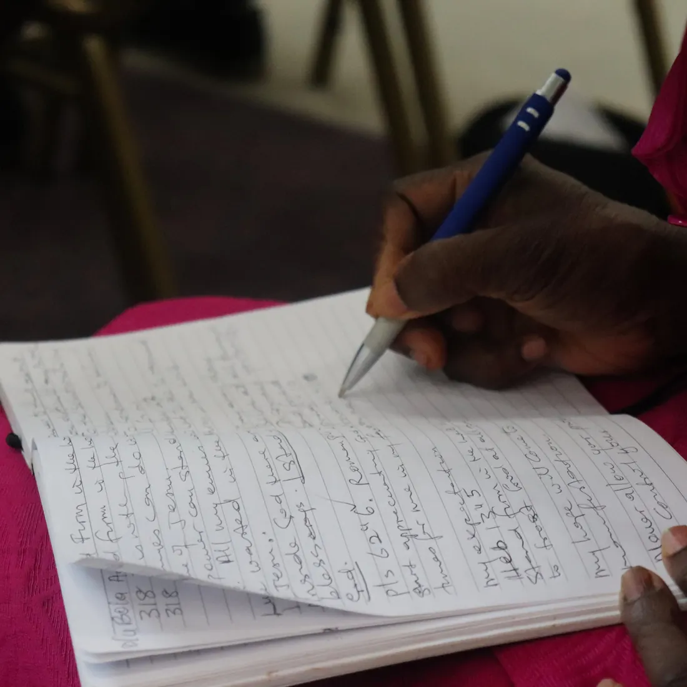

Sermons & Messages
The Anointing That Breaks the Yoke
Pastor Tope Oluwayemiwo

Search sermons, prayer services, healing and deliverance messages, women’s ministry and special events.
Showing 30 messages
Pastor Tope Oluwayemiwo

MFM Florida Crusade


Pastor (Mrs.) Oluwatoyin Bolaji